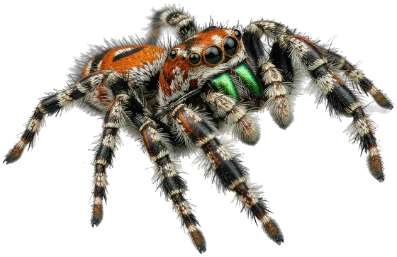

Porcellio scaber
How to Fix High Humidity and Mould in Isopod Cultures
Mould in an isopod tub is almost never a humidity problem. It is an airflow problem, and the fix takes five minutes and a drill.
Mara Ellison
4 min read

A plump abdomen is a better calendar than any schedule. Here is what adult jumping spiders actually eat, how often, and the two feeding mistakes that shorten their lives.

“I have been watching you since the page loaded.”
Every guide is written by a keeper with the animal in front of them, checked against published husbandry literature, and updated when we learn better. No paid placements, no rankings for sale — gear is recommended only after we have run it in our own enclosures.
Mould in an isopod tub is almost never a humidity problem. It is an airflow problem, and the fix takes five minutes and a drill.
Before you change the feeding schedule, change the thermometer. Nine out of ten feeding strikes are a temperature, security or presentation problem — in that order.
The honest answer is more interesting than either camp admits: leopard geckos are crepuscular, not nocturnal, and a low-level UVB zone changes how you supplement calcium.
Hermit crabs do not drown in water — they drown in air that is too dry. The two-pool system, the substrate depth, and the gauge that decides whether they survive a moult.
By topic
By species